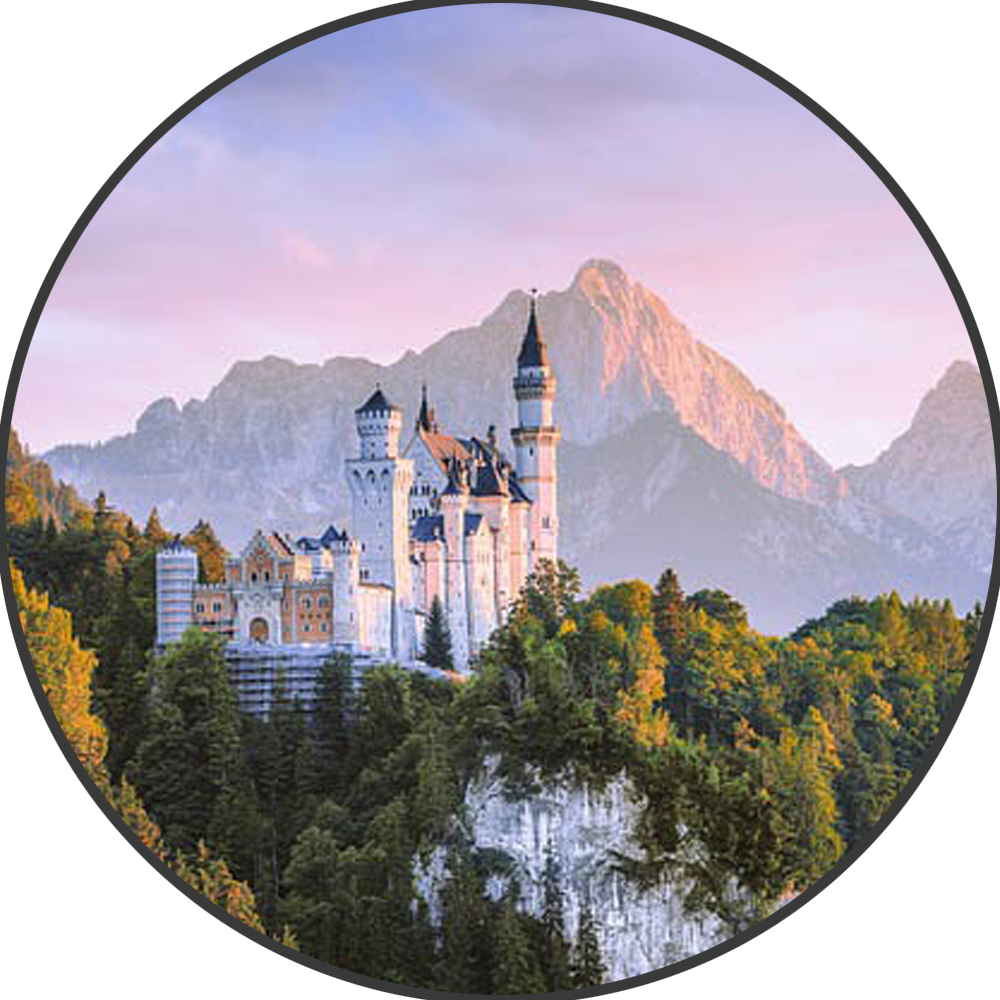

я за 5 метрів від тебе
Польща
Армія:приблизно 500,000 осіб
Країна:
Армія:
1939-1945: Друга світова війна
1 вересня 1939 року нацистська Німеччина вторглася в Польщу, використовуючи тактику блискавичної війни (бліцкриг). Польська армія, хоч і мужньо чинила опір, не змогла зупинити просування німецьких військ. 17 вересня Радянський Союз вторгся з східного боку, відповідно до секретного протоколу пакту Молотова-Ріббентропа. Ця координація між двома тоталітарними державами призвела до падіння Польщі в жовтні 1939 року.
Польща стала ареною жахливих злочинів. Мільйони поляків, євреїв та інших етнічних груп стали жертвами нацистського геноциду. Зокрема, у Варшавському гетто та концтаборі Аушвіц-Біркенау загинуло безліч людей. Польський Рух Опору, зокрема Армія Крайова, чинив активний опір окупантам, проводячи диверсії та акти саботажу. 1945-1989: Повоєнний період і комуністичний режим
Після закінчення Другої світової війни Польща опинилася в зоні радянського впливу. Нові кордони країни були встановлені за рішеннями Потсдамської конференції, включаючи втрату східних територій та приєднання німецьких земель на заході.
1947 року у Польщі було встановлено комуністичний режим під контролем Польської об'єднаної робітничої партії (ПОРП). Жорсткі репресії та контроль над усіма сферами життя стали нормою. Період правління Болеслава Берута, а згодом Владислава Гомулки та Едварда Герека, відзначався спробами економічних реформ, які часто завершувалися невдачами. "Солідарність" і демократичні зміни
1980 року в Ґданську розпочалися масові страйки робітників, які вимагали підвищення заробітної плати та поліпшення умов праці. Це привело до створення незалежного профспілкового руху "Солідарність" під керівництвом Леха Валенси. Рух швидко набрав популярності, стаючи значною силою опору комуністичному режиму.
1981 року, побоюючись втрати контролю, уряд оголосив військовий стан, під час якого багато активістів "Солідарності" були арештовані. Однак це лише зміцнило опозицію, і в 1989 році, під тиском масових протестів та економічної кризи, комуністичний уряд погодився на круглі столи з опозицією. Це призвело до перших напіввільних виборів у червні 1989 року, де "Солідарність" здобула велику перемогу. 1989-2004: Перехід до демократії
Період з 1989 по 2004 рік був часом трансформацій. Польща перейшла від централізованої планової економіки до ринкової, що супроводжувалося важкими реформами, відомими як "шокова терапія". Реформи, ініційовані урядом Тадеуша Мазовецького та Лешека Бальцеровича, привели до приватизації державних підприємств, зростання безробіття, але також до економічного зростання та стабілізації.
У політичному житті Польща переживала часи нестабільності, з частими змінами урядів та політичних конфліктів. Однак у цей період було закладено основи демократичних інститутів і забезпечено права людини. 2004-2024: Членство в Європейському Союзі та сучасний період
1 травня 2004 року Польща стала членом Європейського Союзу, що відкрило нові можливості для економічного розвитку та міжнародної співпраці. Приєднання до ЄС дозволило Польщі отримати доступ до значних фінансових ресурсів для модернізації інфраструктури, покращення екологічної ситуації та розвитку сільського господарства.
Економічне зростання продовжувалося, і Польща стала однією з найшвидше зростаючих економік в Європі. Проте політична сцена залишалася складною. Після перемоги партії "Право і справедливість" (PiS) у 2015 році країна стикнулася з серйозними політичними суперечками. Реформи судової системи, що ініціювалися урядом PiS, викликали критику як всередині країни, так і з боку ЄС, який звинувачував польський уряд у підриві верховенства права. Сучасні виклики і перспективи
У 2020-х роках Польща зіткнулася з багатьма викликами. Протести проти обмежень на аборти, конфлікти з ЄС, зростаючий націоналізм та проблеми з правами людини стали ключовими питаннями на політичному порядку денному. Водночас країна активно підтримувала Україну під час російсько-української війни, надаючи гуманітарну допомогу та підтримуючи санкції проти Росії.
З економічної точки зору Польща продовжує зростати, інвестуючи в інновації та технології. Важливими напрямками розвитку стали цифровізація, екологічна стійкість та інтеграція в глобальні ринки. Перспективи на майбутнє
На 2024 рік Польща стоїть на порозі нових можливостей і викликів. Інтеграція в європейські та світові структури, подальший розвиток економіки, зміцнення демократичних інститутів і подолання внутрішніх політичних конфліктів визначатимуть майбутнє країни. Роль Польщі на міжнародній арені зростає, і вона має всі шанси стати однією з ключових держав у Центральній Європі.
Ця історія Польщі демонструє надзвичайну стійкість та здатність до відновлення нації, яка пережила важкі часи і продовжує розвиватися, будуючи своє майбутнє на основі свободи, демократії та співпраці.